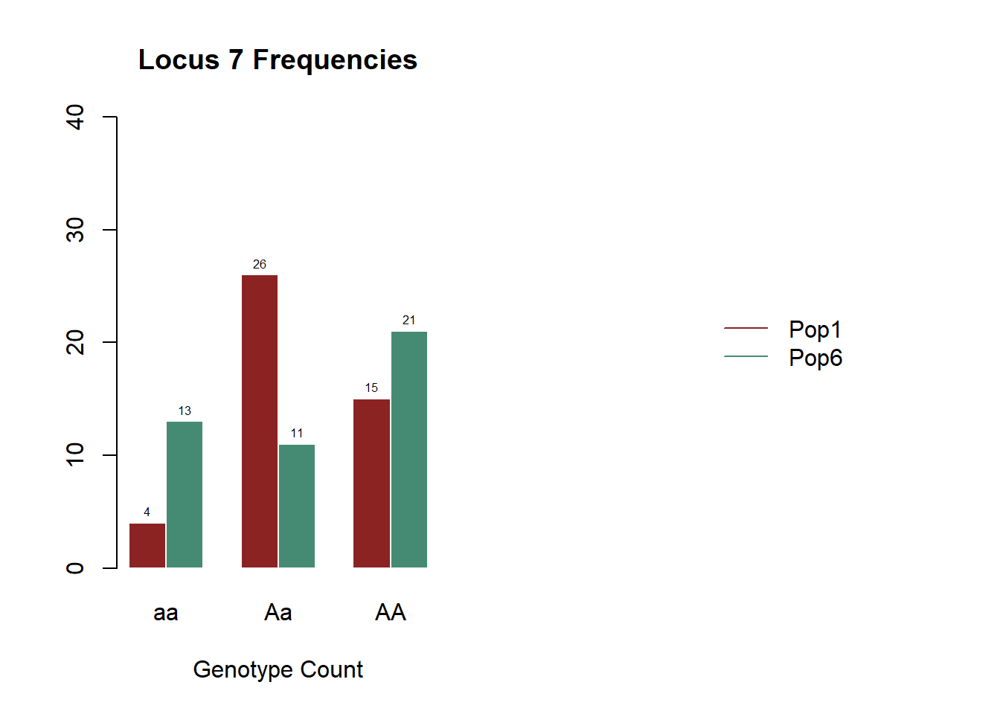
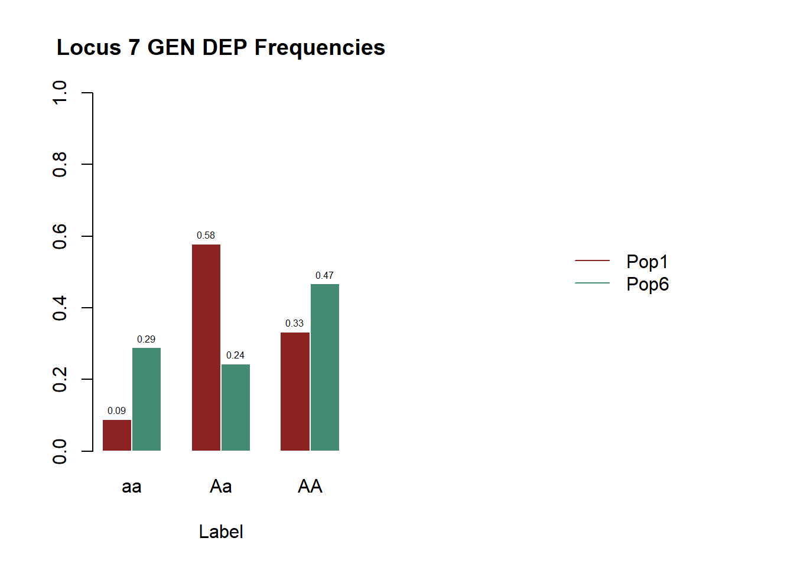
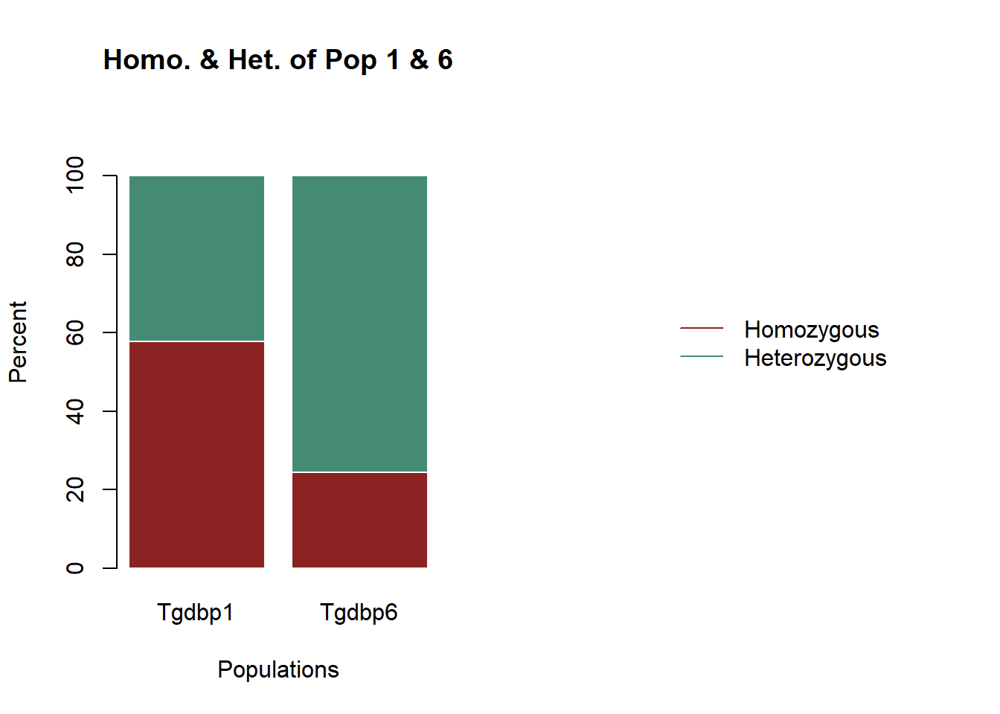
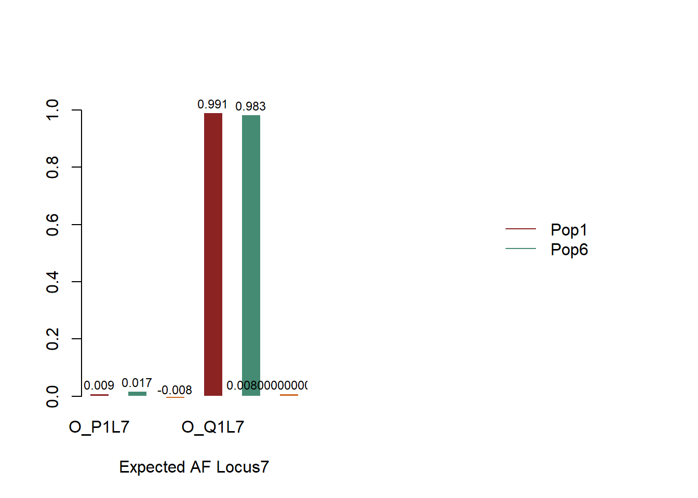
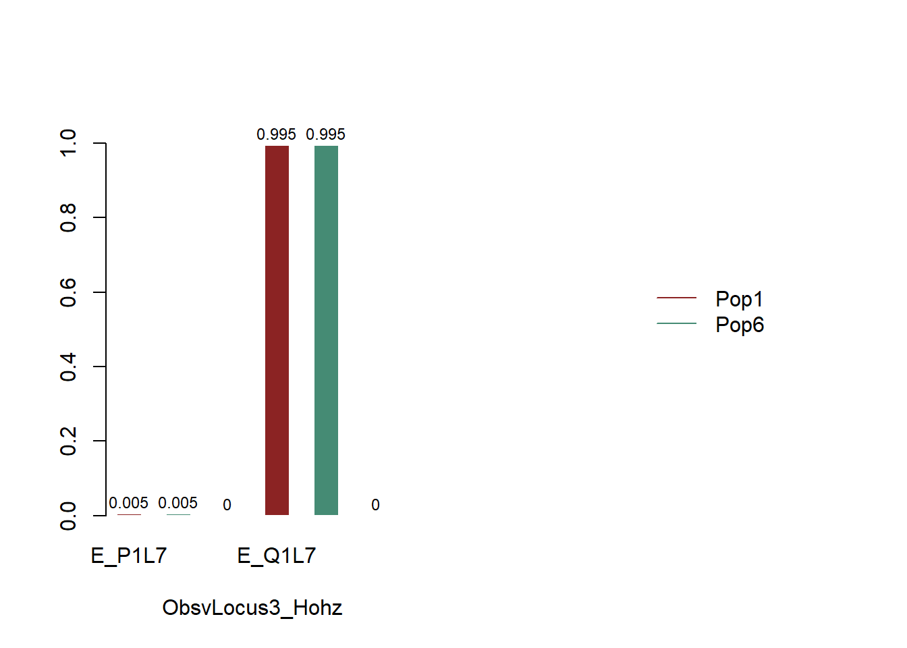
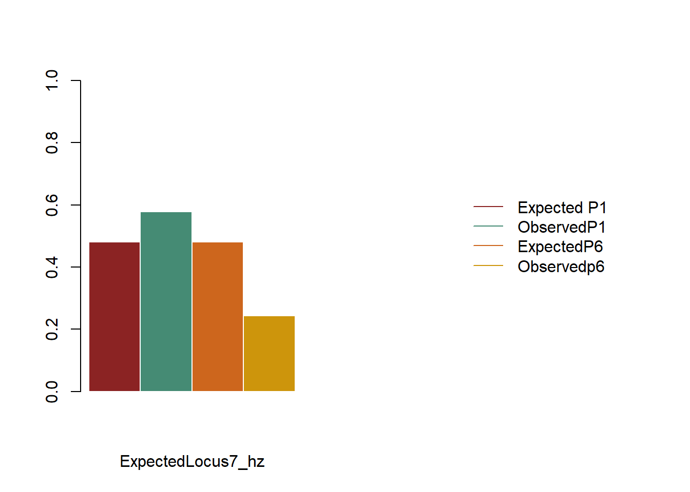
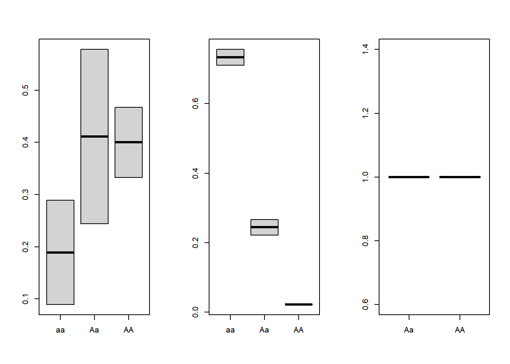

set.seed(123)
n_indv <- 45
n_loci <- 15
n_pop <- 3ugh
#Population 1
p_1 <- 0.6
q_1 <- 1 - p_1
Pop_1 <- data.frame(matrix(sample(c("AA", "Aa", "aa"), size = n_indv * n_loci, replace = TRUE,prob = c(p_1^2, 2 * p_1 * q_1, q_1^2)),nrow = n_indv,ncol = n_loci))
rownames(Pop_1) <- paste0("Indv_A.", 1:n_indv)
colnames(Pop_1) <- paste0("Genotype_Locus", 1:n_loci)
#Population 2
p_2 <- 0.2
q_2 <- 1 - p_2
Pop_2 <- data.frame(matrix(sample(c("AA", "Aa", "aa"), size = n_indv * n_loci, replace = TRUE,prob = c(p_2^2, 2 * p_2 * q_2, q_2^2)),nrow = n_indv,ncol = n_loci))
rownames(Pop_2) <- paste0("Indv_B.", 1:n_indv)
colnames(Pop_2) <- paste0("Genotype_Locus", 1:n_loci)
#Population 3
p_3 <- 0.9
q_3 <- 1 - p_3
Pop_3 <- data.frame(matrix(sample(c("AA", "Aa", "aa"), size = n_indv * n_loci, replace = TRUE,prob = c(p_3^2, 2 * p_3 * q_3, q_3^2)),nrow = n_indv,ncol = n_loci))
rownames(Pop_3) <- paste0("Indv_C.", 1:n_indv)
colnames(Pop_3) <- paste0("Genotype_Locus", 1:n_loci)
#Population 4
p_4 <- 0.5
q_4 <- 1 - p_4
Pop_4 <- data.frame(matrix(sample(c("AA", "Aa", "aa"), size = n_indv * n_loci, replace = TRUE,prob = c(p_4^2, 2 * p_4 * q_4, q_4^2)),nrow = n_indv,ncol = n_loci))
rownames(Pop_4) <- paste0("Indv_D.", 1:n_indv)
colnames(Pop_4) <- paste0("Genotype_Locus", 1:n_loci)
#Population 5
p_5 <- 0.7
q_5 <- 1 - p_5
Pop_5 <- data.frame(matrix(sample(c("AA", "Aa", "aa"), size = n_indv * n_loci, replace = TRUE,prob = c(p_5^2, 2 * p_5 * q_5, q_5^2)),nrow = n_indv,ncol = n_loci))
rownames(Pop_5) <- paste0("Indv_E", 1:n_indv)
colnames(Pop_5) <- paste0("Genotype_Locus", 1:n_loci)
head(Pop_1) Genotype_Locus1 Genotype_Locus2 Genotype_Locus3 Genotype_Locus4
Indv_A.1 Aa Aa Aa AA
Indv_A.2 AA Aa AA AA
Indv_A.3 Aa Aa Aa AA
Indv_A.4 aa Aa AA aa
Indv_A.5 aa aa Aa Aa
Indv_A.6 Aa Aa Aa Aa
Genotype_Locus5 Genotype_Locus6 Genotype_Locus7 Genotype_Locus8
Indv_A.1 AA Aa aa AA
Indv_A.2 Aa Aa Aa AA
Indv_A.3 AA AA Aa Aa
Indv_A.4 Aa AA Aa Aa
Indv_A.5 AA aa AA aa
Indv_A.6 AA AA AA aa
Genotype_Locus9 Genotype_Locus10 Genotype_Locus11 Genotype_Locus12
Indv_A.1 Aa Aa AA aa
Indv_A.2 Aa AA Aa Aa
Indv_A.3 aa Aa Aa Aa
Indv_A.4 Aa Aa Aa AA
Indv_A.5 Aa AA Aa AA
Indv_A.6 AA Aa aa Aa
Genotype_Locus13 Genotype_Locus14 Genotype_Locus15
Indv_A.1 AA Aa AA
Indv_A.2 Aa Aa aa
Indv_A.3 AA AA Aa
Indv_A.4 Aa aa AA
Indv_A.5 AA AA Aa
Indv_A.6 aa AA Aahead(Pop_2) Genotype_Locus1 Genotype_Locus2 Genotype_Locus3 Genotype_Locus4
Indv_B.1 aa aa aa aa
Indv_B.2 Aa Aa aa Aa
Indv_B.3 aa Aa aa aa
Indv_B.4 aa Aa Aa Aa
Indv_B.5 aa aa Aa Aa
Indv_B.6 Aa Aa Aa aa
Genotype_Locus5 Genotype_Locus6 Genotype_Locus7 Genotype_Locus8
Indv_B.1 aa Aa aa aa
Indv_B.2 Aa aa aa aa
Indv_B.3 aa Aa aa aa
Indv_B.4 aa aa aa aa
Indv_B.5 Aa Aa aa aa
Indv_B.6 aa aa aa Aa
Genotype_Locus9 Genotype_Locus10 Genotype_Locus11 Genotype_Locus12
Indv_B.1 aa aa aa aa
Indv_B.2 aa aa Aa aa
Indv_B.3 aa aa aa Aa
Indv_B.4 aa aa aa Aa
Indv_B.5 aa Aa aa aa
Indv_B.6 Aa aa aa aa
Genotype_Locus13 Genotype_Locus14 Genotype_Locus15
Indv_B.1 Aa aa aa
Indv_B.2 aa aa aa
Indv_B.3 Aa aa aa
Indv_B.4 aa aa Aa
Indv_B.5 Aa Aa aa
Indv_B.6 aa aa aahead(Pop_3) Genotype_Locus1 Genotype_Locus2 Genotype_Locus3 Genotype_Locus4
Indv_C.1 AA AA AA AA
Indv_C.2 AA AA AA AA
Indv_C.3 AA AA AA AA
Indv_C.4 AA AA AA AA
Indv_C.5 AA AA AA Aa
Indv_C.6 AA AA AA AA
Genotype_Locus5 Genotype_Locus6 Genotype_Locus7 Genotype_Locus8
Indv_C.1 Aa AA AA AA
Indv_C.2 AA AA AA Aa
Indv_C.3 Aa AA AA AA
Indv_C.4 AA AA AA AA
Indv_C.5 AA AA AA AA
Indv_C.6 AA AA Aa AA
Genotype_Locus9 Genotype_Locus10 Genotype_Locus11 Genotype_Locus12
Indv_C.1 AA AA AA AA
Indv_C.2 AA Aa Aa AA
Indv_C.3 AA AA AA AA
Indv_C.4 Aa AA AA AA
Indv_C.5 AA Aa AA AA
Indv_C.6 Aa AA AA Aa
Genotype_Locus13 Genotype_Locus14 Genotype_Locus15
Indv_C.1 AA AA AA
Indv_C.2 aa AA AA
Indv_C.3 AA AA AA
Indv_C.4 AA AA AA
Indv_C.5 Aa AA AA
Indv_C.6 AA AA AAhead(Pop_4) Genotype_Locus1 Genotype_Locus2 Genotype_Locus3 Genotype_Locus4
Indv_D.1 Aa Aa Aa AA
Indv_D.2 aa AA AA Aa
Indv_D.3 aa aa Aa aa
Indv_D.4 Aa Aa aa aa
Indv_D.5 aa aa AA aa
Indv_D.6 aa AA AA AA
Genotype_Locus5 Genotype_Locus6 Genotype_Locus7 Genotype_Locus8
Indv_D.1 aa AA Aa aa
Indv_D.2 Aa AA Aa Aa
Indv_D.3 aa Aa AA AA
Indv_D.4 aa AA aa AA
Indv_D.5 Aa Aa AA Aa
Indv_D.6 Aa Aa Aa Aa
Genotype_Locus9 Genotype_Locus10 Genotype_Locus11 Genotype_Locus12
Indv_D.1 Aa AA Aa AA
Indv_D.2 aa Aa AA aa
Indv_D.3 AA Aa Aa AA
Indv_D.4 Aa aa AA Aa
Indv_D.5 aa Aa Aa Aa
Indv_D.6 aa aa Aa AA
Genotype_Locus13 Genotype_Locus14 Genotype_Locus15
Indv_D.1 AA aa aa
Indv_D.2 Aa Aa Aa
Indv_D.3 Aa Aa aa
Indv_D.4 Aa Aa Aa
Indv_D.5 AA aa aa
Indv_D.6 Aa aa Aahead(Pop_5) Genotype_Locus1 Genotype_Locus2 Genotype_Locus3 Genotype_Locus4
Indv_E1 AA Aa AA AA
Indv_E2 Aa AA AA Aa
Indv_E3 AA AA Aa Aa
Indv_E4 Aa AA AA Aa
Indv_E5 AA Aa Aa Aa
Indv_E6 aa Aa AA AA
Genotype_Locus5 Genotype_Locus6 Genotype_Locus7 Genotype_Locus8
Indv_E1 Aa AA Aa AA
Indv_E2 Aa Aa AA Aa
Indv_E3 aa aa AA AA
Indv_E4 Aa Aa AA Aa
Indv_E5 AA Aa Aa AA
Indv_E6 aa AA AA AA
Genotype_Locus9 Genotype_Locus10 Genotype_Locus11 Genotype_Locus12
Indv_E1 aa Aa Aa Aa
Indv_E2 AA Aa Aa AA
Indv_E3 Aa AA Aa Aa
Indv_E4 AA Aa AA Aa
Indv_E5 Aa AA Aa AA
Indv_E6 Aa AA AA AA
Genotype_Locus13 Genotype_Locus14 Genotype_Locus15
Indv_E1 AA AA AA
Indv_E2 Aa aa AA
Indv_E3 aa AA Aa
Indv_E4 aa Aa Aa
Indv_E5 Aa AA Aa
Indv_E6 Aa AA AAsample(n_pop,3)[1] 1 3 2#Sampling populations 1, 2, & 3
sample(n_loci, 1)[1] 1#Sampling Locus 7#Population 6: Mirrors Population 1 but shows consequences of inbreeding
#The inbreeding co-efficient (F) is "The probability that an individual has two alleles at a locus that are identical by descent, ranging from 0 (non-inbred) to 1 (completely inbred). Since it reflects the degree of inbreeding in a population, it influences the frequency and homozygotes and heterozygotes."
#FIS: INBREEDING WITHIN A SINGLE SUB-POPULAITON
# Pedigree F = (sum) (1/2 ^ (n + n' + 1 )) * 1 + Fa
#Fa is the inbreeding coefficient of an ancestor and n and n' are the number of generations from each parent to the common ancestor.
#F(ROH) is the genomic F; which is obtained by assessing runs of homozygosity. Actual autozygosty can vary to a wider degree than the pedigree expected average.
#Offspring of self-fertilization F = 0.50.
#Offspring of full-siblings or parent-offspring F = 0.25
#Offspring of half-siblings F = 0.125(1-F)
#Offspring of first cousings F = 0.0625
#Negative Assortive mating results in a negative Fis value which increases heterozygosity
#Genetic drift or inbreednig effect of small populations shows that all individuals of a small population eventually become related over time, which increases the population's average Fst, leading to a gradual loss of heterozygosity.
#Introducing the F-value within the genotype (?) frequency equation looks like:
#Since inbreeding redistributes genotypes, allele frequencies themselves do not change.
#Homo A' = p^2 + pF (or, p^2 + pqF)
#homo A = q^2 + pqF
#heterozygote: 2pq(1-F)
F_valuesP6 <- c(0.0625, 0.125, 0.25, 0.5)
F_p6 <- sample(F_valuesP6, 1)
F_p6[1] 0.125F_p6 <- 0.5
p_6 <- 0.6
q_6 <- 1 - p_6
Pop_6 <- data.frame(matrix(sample(c("AA", "Aa", "aa"), size = n_indv * n_loci, replace = TRUE,prob = c(p_6^2, ((2 * p_6 * q_6) * (1 - F_p6)), q_6^2)),nrow = n_indv, ncol = n_loci))
rownames(Pop_6) <- paste0("Indv_F.", 1:n_indv)
colnames(Pop_6) <- paste0("Genotype_Locus", 1:n_loci)
Pop_6 Genotype_Locus1 Genotype_Locus2 Genotype_Locus3 Genotype_Locus4
Indv_F.1 aa AA Aa AA
Indv_F.2 AA Aa AA AA
Indv_F.3 AA Aa aa AA
Indv_F.4 AA Aa Aa Aa
Indv_F.5 AA Aa AA AA
Indv_F.6 AA AA Aa AA
Indv_F.7 aa AA AA Aa
Indv_F.8 AA AA AA AA
Indv_F.9 AA Aa Aa AA
Indv_F.10 Aa AA aa Aa
Indv_F.11 Aa AA Aa AA
Indv_F.12 AA aa Aa Aa
Indv_F.13 AA aa AA Aa
Indv_F.14 AA Aa AA aa
Indv_F.15 AA AA AA aa
Indv_F.16 aa Aa AA AA
Indv_F.17 Aa Aa aa aa
Indv_F.18 Aa Aa aa Aa
Indv_F.19 Aa Aa aa Aa
Indv_F.20 Aa AA Aa aa
Indv_F.21 AA AA AA AA
Indv_F.22 AA AA AA aa
Indv_F.23 AA AA AA AA
Indv_F.24 AA Aa aa Aa
Indv_F.25 AA AA AA AA
Indv_F.26 AA AA Aa AA
Indv_F.27 aa AA aa aa
Indv_F.28 AA AA Aa Aa
Indv_F.29 aa AA Aa Aa
Indv_F.30 AA AA AA aa
Indv_F.31 AA AA AA aa
Indv_F.32 Aa AA AA Aa
Indv_F.33 AA Aa aa Aa
Indv_F.34 aa Aa AA AA
Indv_F.35 aa AA AA Aa
Indv_F.36 Aa aa Aa aa
Indv_F.37 aa Aa AA AA
Indv_F.38 AA AA AA Aa
Indv_F.39 aa AA Aa aa
Indv_F.40 AA Aa aa Aa
Indv_F.41 AA aa aa aa
Indv_F.42 Aa aa AA Aa
Indv_F.43 aa AA Aa AA
Indv_F.44 Aa AA AA AA
Indv_F.45 AA AA Aa Aa
Genotype_Locus5 Genotype_Locus6 Genotype_Locus7 Genotype_Locus8
Indv_F.1 Aa aa aa AA
Indv_F.2 AA aa AA Aa
Indv_F.3 AA Aa AA Aa
Indv_F.4 Aa aa Aa AA
Indv_F.5 Aa AA aa AA
Indv_F.6 aa Aa Aa AA
Indv_F.7 AA Aa AA AA
Indv_F.8 aa Aa Aa aa
Indv_F.9 Aa AA aa AA
Indv_F.10 Aa AA Aa aa
Indv_F.11 aa AA Aa Aa
Indv_F.12 Aa Aa Aa AA
Indv_F.13 Aa Aa AA AA
Indv_F.14 aa AA aa Aa
Indv_F.15 aa Aa AA Aa
Indv_F.16 Aa Aa AA Aa
Indv_F.17 AA Aa AA AA
Indv_F.18 AA AA AA aa
Indv_F.19 Aa AA Aa Aa
Indv_F.20 AA Aa Aa Aa
Indv_F.21 Aa aa aa AA
Indv_F.22 Aa AA AA Aa
Indv_F.23 AA AA AA aa
Indv_F.24 aa AA aa AA
Indv_F.25 aa Aa aa Aa
Indv_F.26 AA AA Aa aa
Indv_F.27 AA AA aa AA
Indv_F.28 Aa AA Aa AA
Indv_F.29 Aa Aa AA aa
Indv_F.30 AA aa AA AA
Indv_F.31 Aa AA Aa Aa
Indv_F.32 Aa Aa aa AA
Indv_F.33 Aa Aa AA AA
Indv_F.34 AA Aa aa AA
Indv_F.35 AA Aa AA AA
Indv_F.36 aa AA AA aa
Indv_F.37 Aa AA aa Aa
Indv_F.38 aa aa aa AA
Indv_F.39 AA AA aa AA
Indv_F.40 Aa Aa AA AA
Indv_F.41 AA aa AA aa
Indv_F.42 Aa AA AA aa
Indv_F.43 AA AA AA AA
Indv_F.44 Aa Aa AA aa
Indv_F.45 Aa aa AA AA
Genotype_Locus9 Genotype_Locus10 Genotype_Locus11 Genotype_Locus12
Indv_F.1 aa AA aa AA
Indv_F.2 AA AA AA AA
Indv_F.3 aa AA Aa Aa
Indv_F.4 AA Aa Aa AA
Indv_F.5 Aa Aa AA aa
Indv_F.6 Aa AA aa aa
Indv_F.7 AA AA AA AA
Indv_F.8 AA AA AA AA
Indv_F.9 Aa aa Aa aa
Indv_F.10 AA AA Aa aa
Indv_F.11 aa aa AA AA
Indv_F.12 AA AA AA AA
Indv_F.13 aa aa aa AA
Indv_F.14 AA Aa AA Aa
Indv_F.15 AA AA AA AA
Indv_F.16 Aa aa Aa aa
Indv_F.17 Aa Aa Aa AA
Indv_F.18 AA AA AA AA
Indv_F.19 Aa AA AA AA
Indv_F.20 AA Aa aa AA
Indv_F.21 Aa aa aa Aa
Indv_F.22 aa aa AA AA
Indv_F.23 AA AA Aa AA
Indv_F.24 aa AA AA aa
Indv_F.25 Aa AA Aa AA
Indv_F.26 aa AA AA Aa
Indv_F.27 AA Aa Aa AA
Indv_F.28 aa Aa AA Aa
Indv_F.29 Aa AA AA AA
Indv_F.30 AA AA Aa AA
Indv_F.31 aa Aa AA AA
Indv_F.32 aa AA Aa AA
Indv_F.33 aa AA aa aa
Indv_F.34 AA aa Aa aa
Indv_F.35 AA AA Aa Aa
Indv_F.36 aa aa Aa AA
Indv_F.37 aa Aa AA Aa
Indv_F.38 AA AA aa Aa
Indv_F.39 AA Aa Aa AA
Indv_F.40 Aa aa aa Aa
Indv_F.41 AA Aa AA Aa
Indv_F.42 AA AA aa AA
Indv_F.43 aa Aa AA AA
Indv_F.44 AA Aa AA aa
Indv_F.45 aa AA aa aa
Genotype_Locus13 Genotype_Locus14 Genotype_Locus15
Indv_F.1 AA AA AA
Indv_F.2 Aa AA aa
Indv_F.3 aa AA AA
Indv_F.4 AA aa AA
Indv_F.5 AA AA AA
Indv_F.6 Aa AA aa
Indv_F.7 aa aa aa
Indv_F.8 Aa Aa Aa
Indv_F.9 AA aa AA
Indv_F.10 aa aa AA
Indv_F.11 aa Aa AA
Indv_F.12 aa AA Aa
Indv_F.13 aa aa Aa
Indv_F.14 AA aa Aa
Indv_F.15 AA Aa Aa
Indv_F.16 aa AA Aa
Indv_F.17 AA Aa Aa
Indv_F.18 AA aa Aa
Indv_F.19 Aa AA AA
Indv_F.20 Aa Aa Aa
Indv_F.21 aa aa aa
Indv_F.22 AA AA AA
Indv_F.23 AA AA AA
Indv_F.24 AA AA Aa
Indv_F.25 AA AA Aa
Indv_F.26 Aa Aa aa
Indv_F.27 aa AA AA
Indv_F.28 aa Aa Aa
Indv_F.29 AA aa Aa
Indv_F.30 AA Aa Aa
Indv_F.31 aa AA Aa
Indv_F.32 aa Aa Aa
Indv_F.33 Aa Aa aa
Indv_F.34 AA AA Aa
Indv_F.35 AA AA aa
Indv_F.36 AA AA AA
Indv_F.37 AA aa Aa
Indv_F.38 AA Aa AA
Indv_F.39 Aa aa AA
Indv_F.40 AA AA aa
Indv_F.41 Aa AA AA
Indv_F.42 Aa aa Aa
Indv_F.43 aa AA AA
Indv_F.44 Aa Aa AA
Indv_F.45 AA aa AA#Population 7: Mirrors Population 2 but shows consequences of genetic drift after x generations
#FST: INBREEDING BETWEEN SUBPOPULATIONS
#FIT: INBREEDING ACROSS THE WHOLE POPULATION
#Heterozygous affect 2(pq)(1-Fst)
#pq in above equations have little hats, basically the same as population 6's equation but fashionable
#values of 0.00-0.05 show little to no drift. There is high gene flow
#values of 0.05-0.15 show moderate, ongoing genetic drift in partially isolated subpopulations with limited gene flow
#values of 0.15-0.25 shows strong genetic drift and polonged isolation; sub-populations have noticably diverged in allele frequencies
#values greater then 0.25 show severe-drift or near coplete isolation. Subpopulations are approachinng fixation for different alleles (FST = 1.0 for complete fixation)
F_values_P7 <- c(0.05, 0.10, 0.15, 0.20, 0.25)
Fst_p7 <- sample(F_values_P7, 1)
Fst_p7[1] 0.05#calculate p hat and q hat...
p_7 <- 0.2
q_7 <- 1 - p_7
Pop_7 <- data.frame(matrix(sample(c("AA", "Aa", "aa"), size = n_indv * n_loci, replace = TRUE,prob = c(p_7^2, ((2 * p_7 * q_7) * (1 - Fst_p7)), q_7^2)),nrow = n_indv,ncol = n_loci))
rownames(Pop_7) <- paste0("Indv_G.", 1:n_indv)
colnames(Pop_7) <- paste0("Genotype_Locus", 1:n_loci)
Pop_7 Genotype_Locus1 Genotype_Locus2 Genotype_Locus3 Genotype_Locus4
Indv_G.1 aa AA aa Aa
Indv_G.2 aa Aa aa aa
Indv_G.3 aa aa aa aa
Indv_G.4 aa Aa aa Aa
Indv_G.5 aa Aa Aa Aa
Indv_G.6 aa aa Aa aa
Indv_G.7 Aa Aa aa aa
Indv_G.8 Aa Aa aa aa
Indv_G.9 Aa aa aa aa
Indv_G.10 aa aa aa Aa
Indv_G.11 aa aa aa aa
Indv_G.12 aa Aa Aa Aa
Indv_G.13 aa aa aa aa
Indv_G.14 aa aa aa aa
Indv_G.15 aa aa aa Aa
Indv_G.16 aa aa aa Aa
Indv_G.17 Aa Aa aa aa
Indv_G.18 AA Aa aa aa
Indv_G.19 Aa Aa aa Aa
Indv_G.20 Aa aa aa aa
Indv_G.21 aa aa aa aa
Indv_G.22 aa Aa AA aa
Indv_G.23 aa Aa aa aa
Indv_G.24 aa aa Aa aa
Indv_G.25 Aa Aa aa aa
Indv_G.26 Aa aa aa aa
Indv_G.27 aa aa aa aa
Indv_G.28 Aa aa Aa aa
Indv_G.29 aa aa aa aa
Indv_G.30 Aa aa aa aa
Indv_G.31 Aa Aa aa aa
Indv_G.32 Aa aa aa aa
Indv_G.33 aa aa Aa aa
Indv_G.34 aa aa Aa aa
Indv_G.35 aa aa aa aa
Indv_G.36 aa aa Aa Aa
Indv_G.37 aa Aa aa aa
Indv_G.38 aa Aa aa aa
Indv_G.39 aa Aa aa aa
Indv_G.40 AA aa aa aa
Indv_G.41 aa aa aa Aa
Indv_G.42 aa aa Aa aa
Indv_G.43 aa Aa aa aa
Indv_G.44 aa aa aa aa
Indv_G.45 aa aa aa aa
Genotype_Locus5 Genotype_Locus6 Genotype_Locus7 Genotype_Locus8
Indv_G.1 aa Aa aa Aa
Indv_G.2 aa aa aa Aa
Indv_G.3 aa aa aa Aa
Indv_G.4 Aa aa Aa aa
Indv_G.5 aa aa aa aa
Indv_G.6 aa aa aa aa
Indv_G.7 Aa aa aa Aa
Indv_G.8 aa aa aa aa
Indv_G.9 Aa aa aa aa
Indv_G.10 aa aa aa aa
Indv_G.11 Aa aa aa aa
Indv_G.12 Aa aa aa aa
Indv_G.13 Aa aa aa aa
Indv_G.14 aa aa Aa Aa
Indv_G.15 aa aa aa aa
Indv_G.16 Aa aa aa aa
Indv_G.17 aa aa aa Aa
Indv_G.18 Aa Aa aa Aa
Indv_G.19 aa AA aa Aa
Indv_G.20 aa Aa aa aa
Indv_G.21 Aa Aa aa aa
Indv_G.22 aa Aa aa aa
Indv_G.23 aa Aa aa aa
Indv_G.24 aa Aa aa aa
Indv_G.25 aa aa aa Aa
Indv_G.26 Aa Aa AA Aa
Indv_G.27 aa aa aa aa
Indv_G.28 Aa aa aa AA
Indv_G.29 Aa Aa Aa AA
Indv_G.30 aa aa aa aa
Indv_G.31 aa aa Aa aa
Indv_G.32 Aa aa Aa aa
Indv_G.33 aa Aa Aa aa
Indv_G.34 Aa aa aa Aa
Indv_G.35 aa aa aa Aa
Indv_G.36 aa Aa aa Aa
Indv_G.37 aa aa aa Aa
Indv_G.38 aa aa Aa aa
Indv_G.39 aa aa Aa aa
Indv_G.40 aa Aa Aa Aa
Indv_G.41 aa aa aa aa
Indv_G.42 aa aa Aa aa
Indv_G.43 Aa aa aa Aa
Indv_G.44 Aa aa aa aa
Indv_G.45 aa aa aa aa
Genotype_Locus9 Genotype_Locus10 Genotype_Locus11 Genotype_Locus12
Indv_G.1 Aa aa Aa aa
Indv_G.2 aa Aa Aa aa
Indv_G.3 aa Aa Aa aa
Indv_G.4 Aa Aa aa Aa
Indv_G.5 Aa aa aa aa
Indv_G.6 Aa Aa Aa aa
Indv_G.7 aa Aa aa aa
Indv_G.8 AA Aa aa aa
Indv_G.9 AA Aa aa aa
Indv_G.10 aa aa aa aa
Indv_G.11 Aa aa aa aa
Indv_G.12 aa Aa aa aa
Indv_G.13 aa aa aa Aa
Indv_G.14 aa aa Aa aa
Indv_G.15 Aa aa aa AA
Indv_G.16 aa aa Aa Aa
Indv_G.17 aa aa aa Aa
Indv_G.18 Aa aa aa aa
Indv_G.19 aa aa aa Aa
Indv_G.20 aa aa Aa Aa
Indv_G.21 Aa Aa Aa aa
Indv_G.22 Aa aa aa Aa
Indv_G.23 aa aa Aa Aa
Indv_G.24 aa aa Aa Aa
Indv_G.25 Aa aa aa Aa
Indv_G.26 Aa aa Aa Aa
Indv_G.27 aa Aa aa aa
Indv_G.28 aa aa aa aa
Indv_G.29 aa aa aa aa
Indv_G.30 aa Aa aa aa
Indv_G.31 aa aa Aa Aa
Indv_G.32 aa aa Aa Aa
Indv_G.33 aa aa aa aa
Indv_G.34 aa Aa aa aa
Indv_G.35 Aa aa aa aa
Indv_G.36 Aa aa aa Aa
Indv_G.37 aa aa Aa Aa
Indv_G.38 Aa aa Aa aa
Indv_G.39 aa aa aa aa
Indv_G.40 aa aa aa Aa
Indv_G.41 aa aa Aa Aa
Indv_G.42 aa aa aa aa
Indv_G.43 aa aa aa aa
Indv_G.44 aa aa Aa aa
Indv_G.45 aa aa aa aa
Genotype_Locus13 Genotype_Locus14 Genotype_Locus15
Indv_G.1 aa Aa aa
Indv_G.2 aa Aa aa
Indv_G.3 aa aa aa
Indv_G.4 Aa Aa aa
Indv_G.5 aa Aa aa
Indv_G.6 aa aa aa
Indv_G.7 aa Aa aa
Indv_G.8 aa aa Aa
Indv_G.9 Aa aa aa
Indv_G.10 Aa Aa aa
Indv_G.11 aa Aa aa
Indv_G.12 aa aa aa
Indv_G.13 Aa aa aa
Indv_G.14 aa AA Aa
Indv_G.15 AA aa Aa
Indv_G.16 Aa Aa aa
Indv_G.17 Aa aa aa
Indv_G.18 Aa Aa aa
Indv_G.19 aa Aa aa
Indv_G.20 aa aa Aa
Indv_G.21 aa aa Aa
Indv_G.22 Aa aa Aa
Indv_G.23 aa aa Aa
Indv_G.24 aa aa aa
Indv_G.25 Aa Aa Aa
Indv_G.26 Aa aa aa
Indv_G.27 Aa aa aa
Indv_G.28 aa aa aa
Indv_G.29 aa aa aa
Indv_G.30 Aa aa aa
Indv_G.31 aa aa aa
Indv_G.32 Aa aa Aa
Indv_G.33 aa aa Aa
Indv_G.34 aa aa aa
Indv_G.35 Aa Aa Aa
Indv_G.36 aa aa aa
Indv_G.37 Aa aa Aa
Indv_G.38 Aa aa Aa
Indv_G.39 Aa aa aa
Indv_G.40 aa aa aa
Indv_G.41 aa Aa aa
Indv_G.42 Aa aa Aa
Indv_G.43 aa AA aa
Indv_G.44 aa Aa Aa
Indv_G.45 aa Aa AA#Population 8: Mirrors Population 3 but shows consequences of fixation
F_values_P8 <- c(0.25, 0.35, 0.45, 0.55, 0.65, 0.75, 0.85, 0.95)
Fst_p8 <- sample(F_values_P8, 1)
Fst_p8[1] 0.45#need to calculate pq hat from pop3
p_8 <- 0.9
q_8 <- 1 - p_8
Pop_8 <- data.frame(matrix(sample(c("AA", "Aa", "aa"), size = n_indv * n_loci, replace = TRUE,prob = c(p_8^2, ((2 * p_8 * q_8) * (1 - Fst_p8)), q_8^2)),nrow = n_indv,ncol = n_loci))
rownames(Pop_8) <- paste0("Indv_H.", 1:n_indv)
colnames(Pop_8) <- paste0("Genotype_Locus", 1:n_loci) #Binding genotype counts per (original) population
#Testing locus 7 at populations 1, 2, 3
#genetic depression
gd_locus7 <- rbind(table(Pop_1$Genotype_Locus7), table(Pop_6$Genotype_Locus7))
rownames(gd_locus7) <- c("Pop_1", "Pop_6")
#genetic drift
gdf_locus7 <- rbind(table(Pop_2$Genotype_Locus7), table(Pop_7$Genotype_Locus7))
rownames(gdf_locus7) <- c("Pop_2", "Pop_7")
#allele fixation
afx_locus7 <- rbind(table(Pop_3$Genotype_Locus7), table(Pop_8$Genotype_Locus7))
rownames(afx_locus7) <- c("Pop_3", "Pop_8")
#Checking tables
gd_locus7 aa Aa AA
Pop_1 4 26 15
Pop_6 13 11 21gdf_locus7 aa Aa AA
Pop_2 32 12 1
Pop_7 34 10 1afx_locus7 Aa AA
Pop_3 10 35
Pop_8 11 34#Defining frequencies for Locus 7
#Genetic Depression
#population 1
fq_gdP1 <- gd_locus7[1,]/ sum(gd_locus7[1,])
fq_gdP1 <- round(fq_gdP1, digits = 3)
#Population 6
fq_gdP6 <- gd_locus7[2,] / sum(gd_locus7[2,])
fq_gdP6 <- round(fq_gdP6, digits = 3)
fq_gdP6 aa Aa AA
0.289 0.244 0.467 fq_GD <- rbind(fq_gdP1, fq_gdP6)
fq_GD aa Aa AA
fq_gdP1 0.089 0.578 0.333
fq_gdP6 0.289 0.244 0.467#Genetic Drift
#Population 2
fq_gdfP2 <- gdf_locus7[1,] / sum(gdf_locus7[1,])
fq_gdfP2 <- round(fq_gdfP2, digits = 3)
fq_gdfP2 aa Aa AA
0.711 0.267 0.022 #Population 7
fq_gdfP7 <- gdf_locus7[2,] / sum(gdf_locus7[2,])
fq_gdfP7 <- round(fq_gdfP7, digits = 3)
fq_gdfP7 aa Aa AA
0.756 0.222 0.022 fq_GDF <- rbind(fq_gdfP2, fq_gdfP7)
fq_GDF aa Aa AA
fq_gdfP2 0.711 0.267 0.022
fq_gdfP7 0.756 0.222 0.022dim(fq_GDF)[1] 2 3#Fixation
#Population 3
fq_afxP3 <- afx_locus7[1,] / afx_locus7[1,]
fq_afxP3 <- round(fq_afxP3, digits = 3)
fq_afxP3Aa AA
1 1 #Population 8
fq_afxP8 <- afx_locus7[2,] / afx_locus7[2,]
afx_gcP8 <- round(fq_afxP8, digits = 5)
fq_afxP8Aa AA
1 1 fq_AFX <- rbind(fq_afxP3, fq_afxP8)
fq_AFX Aa AA
fq_afxP3 1 1
fq_afxP8 1 1#Homozygosity & Heterozygosity percentages
#Genetic Inbreeding
HMP1L7 <- sum(gd_locus7[1,1] + gd_locus7[1,3]) / sum(gd_locus7[1,]) * 100
HTP1L7 <- 100 - HMP1L7
HMP1L7[1] 42.22222HTP1L7[1] 57.77778HMP6L7 <- sum(gd_locus7[2,1] + gd_locus7[2,3]) / sum(gd_locus7[2,]) * 100
HTP6L7 <- 100 - HMP6L7
HMP6L7[1] 75.55556HTP6L7[1] 24.44444GD_HTL7 <- c(HTP1L7, HTP6L7)
GD_HTL7 <- round(GD_HTL7, digits = 3)
GD_HTL7[1] 57.778 24.444GD_HML7 <- c(HMP1L7, HMP6L7)
GD_HML7 <- round(GD_HML7, digits = 3)
GD_HML7[1] 42.222 75.556T_GD_HTL7 <- cbind(GD_HTL7, GD_HML7)
rownames(T_GD_HTL7) <- c("Pop_1", "Pop_6")
colnames(T_GD_HTL7) <- c("Homozygosity % ", "Heterozygosity %")
T_GD_HTL7 Homozygosity % Heterozygosity %
Pop_1 57.778 42.222
Pop_6 24.444 75.556#Genetic Drift
HMP2L7 <- sum(gdf_locus7[1,1] + gdf_locus7[1,3]) / sum(gdf_locus7[1,]) * 100
HTP2L7 <- 100 - HMP2L7
HMP2L7[1] 73.33333HTP2L7[1] 26.66667HMP7L7<- sum(gdf_locus7[2,1] + gdf_locus7[2,3]) / sum(gdf_locus7[2,]) * 100
HTP7L7 <- 100 - HMP7L7
HTP7L7[1] 22.22222HMP7L7[1] 77.77778GDF_HTL7 <- c(HTP2L7, HTP7L7)
GDF_HTL7 <- round(GDF_HTL7, digits = 3)
GDF_HML7 <- c(HMP1L7, HMP7L7)
GDF_HML7 <- round(GDF_HML7, digits = 3)
T_GDF_HTL7 <- cbind(GDF_HTL7, GDF_HML7)
rownames(T_GDF_HTL7) <- c("Pop_2", "Pop_7")
colnames(T_GDF_HTL7) <- c("Homozygosity % ", "Heterozygosity %")
T_GDF_HTL7 Homozygosity % Heterozygosity %
Pop_2 26.667 42.222
Pop_7 22.222 77.778#Allele Fixation
HMP3L7 <- sum(0 + afx_locus7[1,2]) / sum(afx_locus7[1,]) * 100
HTP3L7 <- 100 - HMP3L7
HMP3L7[1] 77.77778HTP3L7[1] 22.22222HMP8L7<- sum(0 + afx_locus7[2,2]) / sum(gd_locus7[2,]) * 100
HTP8L7 <- 100 - HMP8L7
HTP8L7[1] 24.44444HMP8L7[1] 75.55556AFX_HTL7 <- c(HTP3L7, HTP8L7)
AFX_HTL7 <- round(AFX_HTL7, digits = 3)
AFX_HML7 <- c(HMP3L7, HMP8L7)
AFX_HML7 <- round(AFX_HML7, digits = 3)
T_AFX_HTL7 <- cbind(AFX_HTL7, AFX_HML7)
rownames(T_AFX_HTL7) <- c("Pop_3", "Pop_8")
colnames(T_AFX_HTL7) <- c("Homozygosity % ", "Heterozygosity %")
T_AFX_HTL7 Homozygosity % Heterozygosity %
Pop_3 22.222 77.778
Pop_8 24.444 75.556#Expected allele frequencies
#Population 1
E_P1L7 <- c(p = (2 * p_1 * q_1) / (2 * n_indv))
E_P1L7 <- round(E_P1L7, digits = 3)
E_P1L7 p
0.005 E_Q1L7 <- c( 1 - E_P1L7)
E_Q1L7 <- round(E_Q1L7, digits = 3)
E_Q1L7 p
0.995 #Population 6
E_P6L7 <- c(p = (2 * p_6 * q_6) / (2 * n_indv))
E_P6L7 <- round(E_P1L7, digits = 3)
E_P6L7 p
0.005 E_Q6L7 <- c( 1 - E_P1L7)
E_Q6L7 <- round(E_Q1L7, digits = 3)
E_Q6L7 p
0.995 #diff
DEP_GD <- sum(E_P1L7 - E_P6L7)
DEQ_GD <- sum(E_Q1L7 - E_Q6L7)
#Comparision
GDEAFL7 <- cbind(E_P1L7, E_P6L7,DEP_GD, E_Q1L7, E_Q6L7, DEQ_GD)
GDEAFL7 E_P1L7 E_P6L7 DEP_GD E_Q1L7 E_Q6L7 DEQ_GD
p 0.005 0.005 0 0.995 0.995 0#Population 2
E_P2L7 <- c(p = (2 * p_2 * q_2) / (2 * n_indv))
E_P2L7 <- round(E_P2L7, digits = 3)
E_P2L7 p
0.004 E_Q2L7 <- c( 1 - E_P2L7)
E_Q2L7 <- round(E_Q2L7, digits = 3)
E_Q2L7 p
0.996 #Population 7
E_P7L7 <- c(p = (2 * p_7 * q_7) / (2 * n_indv))
E_P7L7 <- round(E_P2L7, digits = 3)
E_P7L7 p
0.004 E_Q7L7 <- c( 1 - E_P2L7)
E_Q7L7 <- round(E_Q2L7, digits = 3)
E_Q7L7 p
0.996 #diff
DEP_GDF <- sum(E_P2L7 - E_P7L7)
DEQ_GDF <- sum(E_Q2L7 - E_Q7L7)
#Comparision
GDF_EAFL7 <- cbind(E_P2L7, E_P7L7,DEP_GDF, E_Q2L7, E_Q7L7, DEQ_GDF)
GDF_EAFL7 E_P2L7 E_P7L7 DEP_GDF E_Q2L7 E_Q7L7 DEQ_GDF
p 0.004 0.004 0 0.996 0.996 0#Population 3
E_P3L7 <- c(p = (2 * p_3 * q_3) / (2 * n_indv))
E_P3L7 <- round(E_P3L7, digits = 3)
E_P3L7 p
0.002 E_Q3L7 <- c( 1 - E_P3L7)
E_Q3L7 <- round(E_Q3L7, digits = 3)
E_Q3L7 p
0.998 #Population 8
E_P8L7 <- c(p = (2 * p_3 * q_3) / (2 * n_indv))
E_P8L7 <- round(E_P3L7, digits = 3)
E_P8L7 p
0.002 E_Q8L7 <- c( 1 - E_P3L7)
E_Q8L7 <- round(E_Q3L7, digits = 3)
E_Q8L7 p
0.998 #diff
DEP_AFX <- sum(E_P3L7 - E_P8L7)
DEQ_AFX <- sum(E_Q3L7 - E_Q8L7)
#Comparision
AFX_EAFL7 <- cbind(E_P3L7, E_P8L7,DEP_AFX, E_Q3L7, E_Q8L7, DEQ_AFX)
AFX_EAFL7 E_P3L7 E_P8L7 DEP_AFX E_Q3L7 E_Q8L7 DEQ_AFX
p 0.002 0.002 0 0.998 0.998 0#Observed allele frequencies at each sampled population: L7
#Population 1
O_P1L7 <- c(p2o = 2 * (fq_GD[1,1] + fq_GD[1,3]) / (2 * n_indv))
O_P1L7 <- round(O_P1L7, digits = 3)
O_P1L7 p2o
0.009 O_Q1L7 <-c( 1 - O_P1L7 )
O_Q1L7 <- round(O_Q1L7, digits = 3)
O_Q1L7 p2o
0.991 #Population 6
O_P6L7 <- c(p2o = 2 * (fq_GD[2,1] + fq_GD[2,3]) / (2 * n_indv))
O_P6L7 <- round(O_P6L7, digits = 3)
O_P6L7 p2o
0.017 O_Q6L7 <-c( 1 - O_P6L7 )
O_Q6L7 <- round(O_Q6L7, digits = 3)
O_Q6L7 p2o
0.983 #diff
DOP_GD <- sum(O_P1L7 - O_P6L7)
DOQ_GD <- sum(O_Q1L7 - O_Q6L7)
#Comparision
GD_OAFL7 <- cbind(O_P1L7, O_P6L7,DOP_GD, O_Q1L7, O_Q6L7, DOQ_GD)
GD_OAFL7 O_P1L7 O_P6L7 DOP_GD O_Q1L7 O_Q6L7 DOQ_GD
p2o 0.009 0.017 -0.008 0.991 0.983 0.008#Population 2
O_P2L7 <- c(p2o = 2 * (fq_GDF[1,1] + fq_GDF[1,3]) / (2 * n_indv))
O_P2L7 <- round(O_P2L7, digits = 3)
O_P2L7 p2o
0.016 O_Q2L7 <-c( 1 - O_P2L7 )
O_Q2L7 <- round(O_Q2L7, digits = 3)
O_Q2L7 p2o
0.984 #Population 7
O_P7L7 <- c(p2o = 2 * (fq_GDF[2,1] + fq_GDF[2,3]) / (2 * n_indv))
O_P7L7 <- round(O_P7L7, digits = 3)
O_P7L7 p2o
0.017 O_Q7L7 <-c( 1 - O_P7L7 )
O_Q7L7 <- round(O_Q7L7, digits = 3)
#diff
DOP_GDF <- sum(O_P2L7 - O_P7L7)
DOQ_GDF <- sum(O_Q2L7 - O_Q7L7)
#Comparision
GDF_OAFL7 <- cbind(O_P2L7, O_P7L7,DOP_GDF, O_Q2L7, O_Q7L7, DOQ_GD)
GDF_OAFL7 O_P2L7 O_P7L7 DOP_GDF O_Q2L7 O_Q7L7 DOQ_GD
p2o 0.016 0.017 -0.001 0.984 0.983 0.008#Population 3
O_P3L7 <- c(p3o = 2 * (fq_AFX[1,1] + fq_AFX[1,2]) / (2 * n_indv))
O_P3L7 <- round(O_P3L7, digits = 3)
O_P3L7 p3o
0.044 O_Q3L7 <-c( 1 - O_P3L7 )
O_Q3L7 <- round(O_Q3L7, digits = 3)
O_Q3L7 p3o
0.956 #Population 8
O_P8L7 <- c(p2o = 2 * (fq_AFX[2,1] + fq_AFX[2,2]) / (2 * n_indv))
O_P8L7 <- round(O_P8L7, digits = 3)
O_P8L7 p2o
0.044 O_Q8L7 <-c( 1 - O_P8L7 )
O_Q8L7 <- round(O_Q8L7, digits = 3)
O_Q8L7 p2o
0.956 #diff
DOP_AFX <- sum(O_P3L7 - O_P8L7)
DOQ_AFX <- sum(O_Q3L7 - O_Q8L7)
#Comparision
AFX_OAFL7 <- cbind(O_P3L7, O_P8L7,DOP_GD, O_Q3L7, O_Q8L7, DOQ_GD)
AFX_OAFL7 O_P3L7 O_P8L7 DOP_GD O_Q3L7 O_Q8L7 DOQ_GD
p3o 0.044 0.044 -0.008 0.956 0.956 0.008#Expected at each population for Locus 7
#For populations 1
EHZP1L7 <- c(Aa = 2 * p_1 * q_1)
EHZP1L7 Aa
0.48 #Population 6
EHZP6L7 <- c(Aa = 2 * p_6 * q_6)
EHZP6L7 Aa
0.48 #For populations 2
EHZP2L7 <- c(Aa = 2 * p_2 * q_2)
EHZP2L7 Aa
0.32 #For population 7
EHZP7L7 <- c(Aa = 2 * p_7 * q_7)
EHZP7L7 Aa
0.32 #For populations 3
EHZP3L7 <- c(Aa = 2 * p_3 * q_3)
EHZP3L7 Aa
0.18 #For population 8
EHZP8L7 <- c(Aa = 2 * p_8 * q_8)
EHZP8L7 Aa
0.18 #AEHZL7 <- rbind(EHZP1L7, EHZP2L7, EHZP3L7)
#AEHZL7
#Observed
#Population 1
OHZP1L7 <- c(Aa = fq_GD[1,2])
OHZP1L7 Aa
0.578 #Population 6
OHZP6L7 <- c(Aa = fq_GD[2,2])
OHZP6L7 Aa
0.244 #Population 2
OHZP2L7 <- c(Aa = fq_GDF[1,2])
OHZP2L7 Aa
0.267 #Population 7
OHZP7L7 <- c(Aa = fq_GDF[2,2])
OHZP7L7 Aa
0.222 #Population 3
OHZP3L7 <- c(Aa = fq_AFX[1,2])
OHZP3L7 Aa
1 #Population 8
OHZP8L7 <- c(Aa = fq_AFX[2,2])
OHZP8L7 Aa
1 #Inbreeding
AOHZGDL7 <- rbind(OHZP1L7, OHZP3L7)
AOHZGDL7 Aa
OHZP1L7 0.578
OHZP3L7 1.000#Drift
AOHZGDFL7 <- rbind(OHZP2L7, OHZP6L7)
AOHZGDFL7 Aa
OHZP2L7 0.267
OHZP6L7 0.244#Fixation
AOHZAFXL7 <- rbind(OHZP3L7, OHZP6L7)
AOHZAFXL7 Aa
OHZP3L7 1.000
OHZP6L7 0.244fq_AFX Aa AA
fq_afxP3 1 1
fq_afxP8 1 1#FIs = Ho - He / He or something
#yeah booooyyyyy
#Population 1
GD_FP1 <- ((OHZP1L7 - EHZP1L7)/EHZP1L7)
#Population 6
GD_FP6 <- ((OHZP6L7 - EHZP6L7)/EHZP6L7)
#Comparison Table
GD_FC <- data.frame(rbind(GD_FP1, GD_FP6))
GD_FC <- round(GD_FC, digits = 3)
rownames(GD_FC) <- c("Pop 1", "Pop 6")
colnames(GD_FC) <- paste0("F-value")
GD_FC F-value
Pop 1 0.204
Pop 6 -0.492#Population 2
GDF_FP2 <- ((OHZP2L7 - EHZP2L7)/EHZP2L7)
#Population 7
GDF_FP7 <- ((OHZP7L7 - EHZP7L7)/EHZP7L7)
#Comparison
GDF_FC <- data.frame(rbind(GDF_FP2, GDF_FP7))
GDF_FC <- round(GDF_FC, digits = 3)
rownames(GDF_FC) <- c("Pop 2", "Pop 7")
colnames(GDF_FC) <- paste0("F-value")
GDF_FC F-value
Pop 2 -0.166
Pop 7 -0.306#Population 3
GD_FP3 <- ((OHZP3L7 - EHZP3L7)/EHZP3L7)
#Population 8
GD_FP8 <- ((OHZP8L7 - EHZP8L7)/EHZP8L7)
#Comparison
AFX_FC <- data.frame(rbind(GD_FP3, GD_FP8))
AFX_FC <- round(AFX_FC, digits = 3)
rownames(AFX_FC) <- c("Pop 3", "Pop 8")
colnames(AFX_FC) <- paste0("F-value")
AFX_FC F-value
Pop 3 4.556
Pop 8 4.556#Grouped Graphs for Genotype Counts
#Genetic Depression: Populations 1 & 6
par(mfrow = c(1,2))
ylimgc <- c(0, 40)
gd_locus7R <- round(gd_locus7, digits = 2)
SPGCL3 <- barplot(gd_locus7, col=colors()[c(36, 12)], border = "white", font.axis = 1, beside = T, xlab="Genotype Count", main = "Locus 7 Frequencies", font.lab=1, ylim = ylimgc)
colnames(SPGCL3) <- c("aa", "Aa", "AA")
text(x = SPGCL3, y = gd_locus7, labels = gd_locus7R, adj = c(.5, -0.75), cex = .5, col = "black")
plot.new()
legend("center", legend = c("Pop1", "Pop6"), col = colors()[c(36, 12, 55)], lty = 1, bty = "n")
#Grouped Graphs for Genotype Frequencies
par(mfrow = c(1,2))
ylimfq <- c(0, 1)
fq_GDR <- round(fq_GD, digits = 2)
SPGFL7 <- barplot(fq_GD, col=colors()[c(36, 12)], border = "white", font.axis = 1, beside = T, xlab="Label", main = "Locus 7 GEN DEP Frequencies", font.lab= 1, ylim = ylimfq)
colnames(SPGFL7) <- c("aa", "Aa", "AA")
text(x = SPGFL7, y = fq_GD, labels = fq_GDR, adj = c(.5, -0.75), cex = .5, col = "black")
plot.new()
legend("center", legend = c("Pop1", "Pop6"), col = colors()[c(36, 12)], lty = 1, bty = "n")
##########dont know why labels arent showin up right##############
par(mfrow = c(1,2))
Tgdbp1 <-c(57.78, 42.22)
Tgdbp6 <- c(24.44, 75.56 )
ylimtgd <- c(0,115)
T_GD_HTL7.BP <- cbind(Tgdbp1, Tgdbp6)
SPHHL7 <- barplot(T_GD_HTL7.BP, col=colors()[c(36,12)], border = "white", font.axis = 1, ylab = "Percent", xlab = "Populations", main = "Homo. & Het. of Pop 1 & 6", font.lab = 1, ylim = ylimtgd)
text(x = T_GD_HTL7.BP, y = T_GD_HTL7, labels = T_GD_HTL7, adj = c(.5, -0.5), cex = .8, col = "black")
plot.new()
legend("center", legend = c("Homozygous", "Heterozygous"), col = colors()[c(36, 12)], lty = 1, bty = "n")
par(mfrow = c(1,2))
ylimfqh <- c(0, 1.1)
OAFBP <- barplot(GD_OAFL7, col=colors()[c(36, 12, 55)], border = "white", font.axis = 1, beside = T, xlab="Expected AF Locus7", font.lab=1, ylim = ylimfqh)
#rownames(AEAFL11) <- c("P_p2", "QP2", "P_P3", "QP3", "P_P4", "QP4")
text(x = OAFBP, y = GD_OAFL7, labels = GD_OAFL7, adj = c(.5, -0.5), cex = .75, col = "black")
plot.new()
legend("center", legend = c("Pop1", "Pop6"), col = colors()[c(36, 12)], lty = 1, bty = "n")
par(mfrow = c(1,2))
EAFBP <- barplot(GDEAFL7, col=colors()[c(36, 12, 55)], border = "white", font.axis = 1, beside = T, xlab="ObsvLocus3_Hohz", font.lab=1, ylim = ylimfqh)
#rownames(AOAFL11) <- c("Pop2", "Pop3", "Pop4")
text(x = EAFBP, y = GDEAFL7, labels = GDEAFL7, adj = c(.5, -0.5), cex = .75, col = "black")
plot.new()
legend("center", legend = c("Pop1", "Pop6"), col = colors()[c(36, 12)], lty = 1, bty = "n")
par(mfrow = c(1,2))
ylimfqh <- c(0, 1)
EHZV <- matrix(cbind(EHZP1L7, OHZP1L7, EHZP6L7, OHZP6L7))
rownames(EHZV) <- c("Pop1", "Pop6", "P1", "P6")
EHZBP <- barplot(EHZV, col=colors()[c(36, 12, 55, 78)], border = "white", font.axis = 1, beside = T, xlab="ExpectedLocus7_hz", font.lab=1, ylim = ylimfqh)
text(x = EHZBP, y = EHZBP, labels = EHZV, adj = c(.5, -0.5), cex = .75, col = "black")
plot.new()
legend("center", legend = c("Expected P1", "ObservedP1", "ExpectedP6", "Observedp6"), col = colors()[c(36, 12, 55, 78)], lty = 1, bty = "n")
par(mfrow = c(1,3))
boxplot(fq_GD)
boxplot(fq_GDF)
boxplot(fq_AFX)